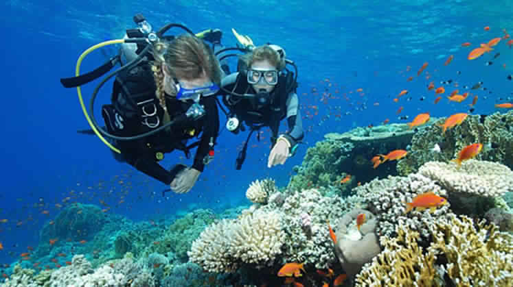

Here are some places in india
Bir-Billing

The rolling hills and meadows encircling the villages of Bir and Billing perfectly paint a diorama of pastoral idyll. But
what captures your attention is the countless paragliders soaring on the thermals. This region of Himachal
Pradesh is considered as one of the finest paragliding destinations in the world.
[Browse through collection of bir Billing Packages]
Rajasthan
It is right to say that hot air balloon rides are new to Indian adventure tourism but still it is steadily becoming
a craze among tourists, and family vacationers. Get a bird’s eye view of sand dunes, small villages, and
massive forts and palaces of Rajasthan with hot air balloon flights.jaslamar,jaipur are some places.
[Browse through collection of hot air balloon ride Packages]
Ladakh
From strenuous Stok Kangri Trek to easy Sham Valley Trek, it is hard to beat the allure of Ladakh in terms of
trekking adventure. Though there are many other trails in Himachal Pradesh and Uttarakhand, yet what distinguishes
Ladakh from others are its topographical variations, highly-influencing monasteries circuit and life-surviving
experiences.
[Browse through collection of Ladakh Tour Packages]
Paragliding in Goa

Paragliding is a recreational and competitive flying sport. A paraglider is a free-flying, foot-launched aircraft. Parasailing
is a recreational activity where a person is towed behind a boad while attached to aspecially designed parachute, known as a parasail.Parasailing in Goa is very safe because here at Atlantis Water Sports.
[Browse through collection of paragliding packages]
Scuba diving

Relatively small in comparison to Andaman Islands but equally fascinating, Lakshadweep group of islands is one among the
top choices for scuba divers. Crystal clear water, exotic marine life, natural reefs, blue lagoons and white
coral sands together make scuba diving in Lakshadweep a captivating experience.
[Browse through collection of Lakshdweep-Scuba-Diving Packages]
Har ki Doon Valley
Har Ki Doon Valley is a cradle shaped hanging valley in the Garhwal Himalayas. It is surrounded by snow-covered peaks and
alpine vegetation.[1] It is connected to Baspa Valley by the Borasu Pass The trek to the valley starts from
Taluka village and passes through Gangaad, Osala, and Seema. It is a 2-day trek usually done in two stages.
[Browse through collection of Har ki dun vally Tour Packages]